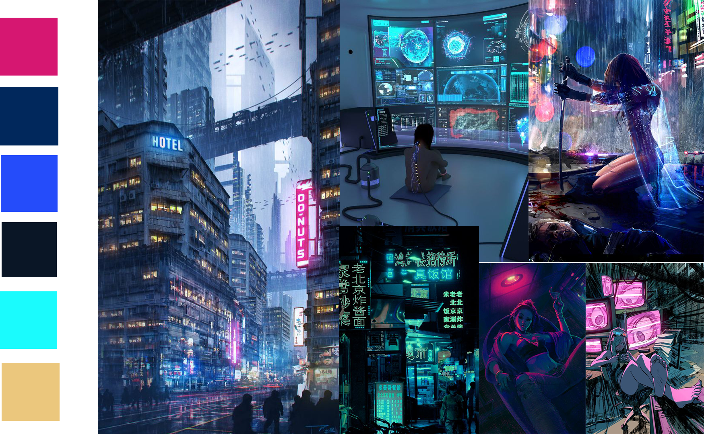

Aeon Cybernetics
The future is here.
Be a part of the evolution.
The future is here.
Be a part of the evolution.
This research project that aims to understand how people who aren't "tech-savvy" react to emerging
technologies.
It was inspired by the increasing discussions about privacy and ethics
in
the
tech world.
This was a long and complex process, divided into 3 steps:
I created a fictional company and invited people to try their first products, all inspired by real and working experiments related to transhumanism*
I developed the company's official website and Facebook page. This way I was able to interview a diverse group of people countrywide.
Based on the data acquired, I wrote an article about my conclusions presented at CIDI - 8th Information Design International Conference [in Portuguese].
* Transhumanism: The project of modifying the human species through any emerging technology, including genetic engineering, digital technology, and bioengineering.
“Aeon Cybernetics has as its goal to bridge the gap between today’s advances in biotechnology and everyday life, supporting the creation of products that expand the possibilities of the human body and allowing non-technical people to take advantage of these products in an easy, practical and affordable way”
Excerpt of the company’s bio, available on the website.
The company had to convey the ideas of trust, reliability and futuristic innovation while representing a study about privacy and ethics in the tech industry.
The logo subtly expresses the idea of surveillance, while still representing sophistication and integrity.
I chose a lightweight sans-serif typography, similar to other startups' so the company could be quickly recognized as part of the innovation and tech context, increasing its credibility.
Then, I worked on different alternatives to include a Sci-Fi element in the identity, inspired by cybernetic eyes and circuit boards.
The final logo contains a blue gradient in the letter "o" that excels when applied on the dark background of the website, making the logo resemble an eye.
For the website's visual identity I created 3 moodboards and layouts to express different concepts.
inspired by cyberpunk and science fiction
based on hospitals and health-related websites

inspired by cyberpunk and science fiction

Since one of the project's goals was to raise awareness about the amount of seemingly "Sci-Fi technologies" that are available today, I chose the futuristic layout and created line-based illustrations to represent all products and scenarios described.
Despite being designed for recovering addicts, this app is helpful for anyone who needs to avoid harmful contexts and addict behaviour, no matter if it's related to drugs, food or an abusive partner. This realizations is reflected on the somewhat generic interface.
During this project, I learned a lot about the process of building apps and the differences between designing for Android and IOS, especially when it comes to what is allowed or not on each platform.
I know many of the features designed need permissions that are not possible to get. Still, I enjoyed working on a product that I'm confident could help people, even if just as an inspiration.
contact me